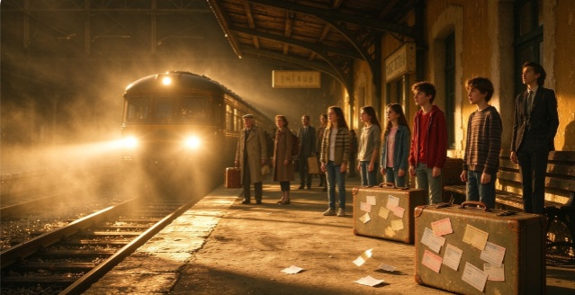
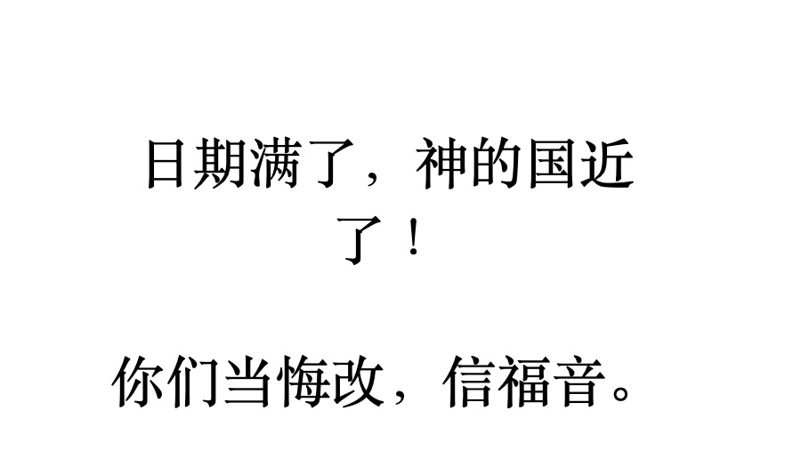
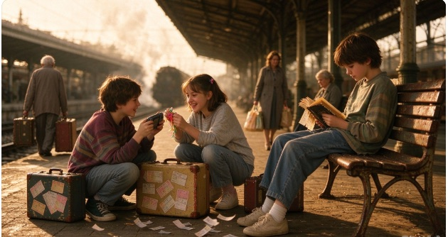
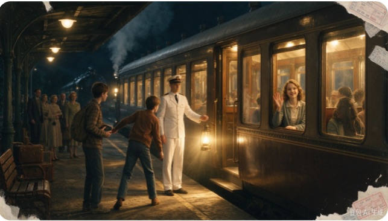
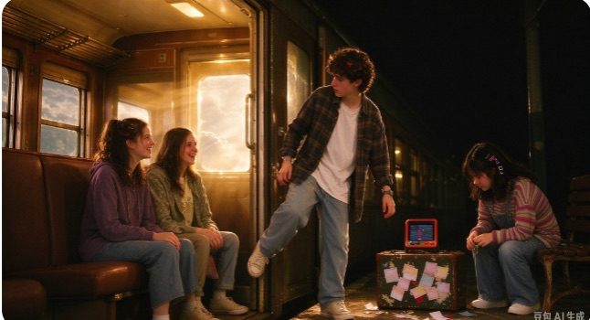
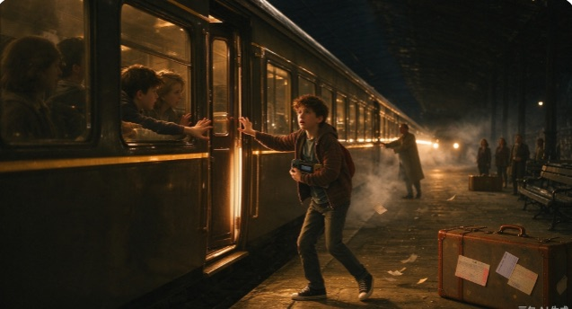
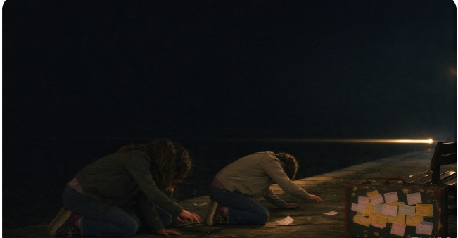

定演员、找音控
选定 7 个孩子；找到音控同工，并确认演出场地和 12/19 彩排时间。

主日学圣诞哑剧。全剧没有台词，讲站台上的人面对列车召唤时的不同选择：有人马上上车，有人犹豫，有人下了车，最后列车开走了。
只有 3 个主日可以排练，每次都不能缺。带剧老师：丁丁老师。
| 日期 | 内容 | 谁到场 | 状态 |
|---|---|---|---|
| 11/29主日 | 第 1 次排练：讲故事和主旨，分角色，走第一、二幕 | 演员 | |
| 12/06主日 | 第 2 次排练：不放音乐，五幕动作全部慢练 3 遍，地上贴标记 | 演员 | |
| 12/13主日 | 第 3 次排练：合音乐和 PPT，重点练 4:25–4:47（急停、冲下车、关门、离场） | 演员、音控、PPT | |
| 12/19周六 | 彩排：正式场地，灯光、蜡烛、后台全部到齐，连演 2 遍 | 所有人 | |
| 12/20主日 | 演出：提前 30 分钟到场，检查道具、音响和投影 | 所有人 |
选定 7 个孩子；找到音控同工，并确认演出场地和 12/19 彩排时间。
演员版每个孩子 1 份，老师版 2 份。把排练和彩排日期告诉家长。
司琴录 5 首纯音乐，交来后自动合成完整音轨。
手举牌、LED 蜡烛备齐；PPT 第 2–7 张裁掉水印。
按每次约 40 分钟安排。时间不够时，先压缩“复习”，新内容和最后的连排不要省。
回家：看两遍视频，记住自己在哪里上场、下场。
回家：对着视频练自己的卡点。
回家：不再加新动作，在心里把全剧过一遍。
回家：早点休息。彩排后不再改动作。
提醒：屏幕先停在经文页，等主持人报幕。
每个戏份重的角色请指定一位替补，至少看过走位。12/5、12/12 周六线上各用几分钟提醒孩子看视频、记卡点。
结局时车上 3 人、站台 3 人。人少时可请老师演列车长；人多可以加“站台路人”。
平和庄重，动作慢而稳，是召唤的传递者。
白色长袍或制服、“天国的列车”牌子
带列车离开早就准备好了，一听召唤就上车，不回头。
无
车上挣扎后把游戏机扔掉，第二次邀请时上车。
游戏机
车上脚抬起又放下，最后没迈出那一步。
发饰
站台上了车，心却一直在站台。戏份最重，选表现力最强的孩子。
下车后捡起 A 扔下的游戏机
站台抱着胳膊旁观，觉得事不关己。
漫画书
站台时间和下面的音乐提示表一致。黄色标签是音乐或音效的卡点。

屏幕停在经文页：“日期满了，神的国近了！你们当悔改，信福音。”（马可福音 1:15）演员在侧台就位，主持人报幕后灯亮、切第 2 张，音乐从 0:00 开始。

暖黄灯光，列车声隐约响起，所有人松散地分布在站台上，像一个普通的午后。
0:55 钟声 ×3站台上的人一个接一个停下动作。

列车长第二次抬手邀请，带着温柔的催促。

列车长走到车门口，做“即将关门”的手势。

灯光慢慢暗下，只留列车离开方向一点暖光。

这出剧想说的：天国的列车不会永远等待。趁早回应召唤，才不会留下无法挽回的后悔。
蜡烛亮起后，屏幕切到第 8 张，停约 15 秒：“因为他说：‘在悦纳的时候，我应允了你；在拯救的日子，我搭救了你。’看哪，现在正是悦纳的时候，现在正是拯救的日子。”（哥林多后书 6:2）
这一段怎么演还没定。现在暂按“演员保持定格、不放音乐、经文停 15 秒后灯亮谢幕”来写，以丁丁老师的安排为准。
全部用钢琴纯音乐，不用带歌词的版本。三处静音（4:25、6:00、7:35）也是表演的一部分。
现在只有钟声、列车声、叮咚、关门声，诗歌的位置先空着。排练时可以用它对卡点。
| 时间 | 音乐 / 音效 | 音量与操作 | 台上同步 | PPT |
|---|---|---|---|---|
| 开场前 | — | — | 观众入座 | 第 1 张 |
| 0:00 | 《耶稣爱我》+ 列车环境声 | 轻，0:50 开始淡出 | 站台日常 | 第 2 张 |
| 0:55 | 教堂钟声三声 | 每声间隔 2 秒，一声比一声略强 | 众人依次停下 | 第 3 张 |
| 1:02 | 《预备主的道路》 | 渐入，1:20 升高，2:35 降低 | 列车长入场，果断登车 | |
| 2:50 | 《我要向高山举目》 | 慢慢升高，不要鼓点 | 第二次邀请，反悔者三次回头 | 第 4 张 |
| 4:20 | 音乐继续 | — | “即将关门”手势 | 第 5 张 |
| 4:25 | 全部急停 | 静音约 3 秒 | 反悔者猛地站起 | |
| 4:28 | 弦乐低音一推 | 约 2 秒后收掉 | 推开同伴、冲下车 | |
| 4:35 | “叮咚”提示音 | 清晰响亮 | 全体定格 | |
| 4:45 | 车门“咔哒” | 短促 | 门在反悔者面前关上 | |
| 4:47 | 《伟大奇妙神》+ 列车轰鸣 | 升高，5:30 起渐弱 | 列车离场 | |
| 5:40 | 尾音淡出 | 6:00 归零，安静约 5 秒 | 空站台，三人愣住 | 第 6 张 |
| 6:05 | 《效法耶稣歌》 | 极轻进入，7:25 开始淡出 | 6:20 追车，然后跪地 | 跪地时第 7 张 |
| 7:35 | 完全静音 | 0% | 全体定格，灯光渐暗 | |
| 7:40 | 一声轻柔钟声 | 自然延音 | 全暗，蜡烛亮起 | |
| 7:45 | 无音乐（暂定） | 0% | 保持定格，约 15 秒后灯亮谢幕 | 第 8 张经文 |
共 8 张：开场经文 + 6 张背景 + 结尾经文。背景图右下角有 AI 生成水印，投屏前裁掉。
全剧约 12 人：演员 7–8 人 + 后台 4 人。道具预算约 50 元，演员穿日常干净衣服即可。
音乐剪成一条音轨后，音控可兼 PPT，灯光可兼蜡烛，后台最少 2 人。
打印稿会随排练调整，每版标了版本号和日期。改动请拍照发给 Teen 负责人，统一更新后再打印。
原稿里有几处前后对不上，整理时先这样处理了，以丁丁老师的想法为准。
原稿一处说列车长放下牌子站在一旁，一处说推车厢离场。现在写成车上三人搭肩，跟列车长走下台，椅子留在原地。
按原稿新加的“边玩游戏机边慢吞吞走向列车”，写成他走到车门前门就关了，和 PPT 第 6 张一致。
剧本和配乐稿的时间不一致，现以配乐稿为准统一，关门挪到 4:45，留出反悔者走回车门的时间。
原剧本是先叮咚、反悔者再下车；现在按配乐稿，反悔者先下车，再响叮咚。
原剧本有“第二次钟声两声”，配乐稿没有，现在没放，可以加在 2:50 第二次邀请时。
A 拿游戏机、B 拿发饰、留守者拿漫画书，反悔者没有自己的道具，下车后捡 A 扔掉的游戏机。
丁丁老师已在 PPT 加了第 8 张结尾经文（哥林多后书 6:2）。还需要定：停多久、要不要配音乐、要不要有人朗读。现在暂按停 15 秒、不放音乐来写。